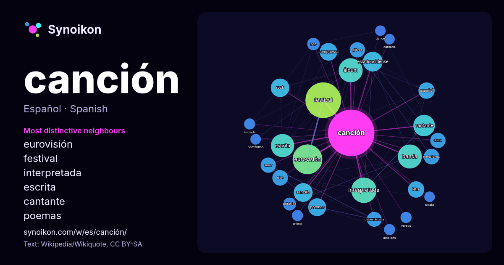

Español · lista de palabras del día
canción
“song” · Las palabras encontradas a su alrededor en 1280 apariciones de Wikipedia, Wikiquote.

Vecinos más característicos
- eurovisión 75×
- festival 64×
- interpretada 53×
- escrita 35×
- cantante 26×
- poemas 23×
- compuesta 23×
- menciones 23×
- isbn 22×
- glibros 22×
- desesperada 21×
- rock 20×
- banda 18×
- sencillo 18×
- álbum 17×
- letra 16×
- amor 15×
- estadounidense 15×
- albaigès 12×
- pop 12×
× = cuántas veces más que en el texto general de Wikipedia.
Vecinos más frecuentes
- festival 115
- eurovisión 80
- interpretada 58
- álbum 52
- banda 52
- escrita 49
- cantante 42
- estadounidense 35
- sencillo 32
- rock 31
- poemas 29
- año 28
- compuesta 28
- español 24
- letra 24
- isbn 22
- menciones 22
- amor 21
- disco 21
- glibros 21
En contexto
- tipos de canciones que se pueden clasificar según distintos criterios. Una división típica es entre canto lírico, canción folclórica y canción popular Wikipedia snippets · Canción
- La canción de protesta (también llamada canción social) es una canción asociada a un movimiento de protesta y cambio social, y por lo tanto forma parte Wikipedia snippets · Canción protesta
- La nueva canción fue un movimiento musical de izquierda de América Latina y España (nueva canción española) que apareció más o menos al mismo tiempo —a Wikipedia snippets · Nueva canción
- OTI de la Canción o Festival de la OTI, cuyo nombre original era Gran Premio de la Canción Iberoamericana (heredero del Festival de la Canción Latina, también Wikipedia snippets · Festival OTI de la Canción
- las características más evidentes de la Nueva Canción Chilena era el poseer un fuerte componente de canción protesta en sus letras y música, el periodo Wikipedia snippets · Nueva canción chilena
- Festival de la Canción de la UAR Festival de la Canción de Intervisión Festival de la Canción Mediterránea Benidorm Fest Festival de la Canción de San Remo Wikipedia snippets · Festival de la Canción de Eurovisión
- principales listas de popularidad del mundo. En Alemania la canción fue nominada por Disco del Año. La canción volvió a ser publicada en 2007 como "Music Inferno" Wikipedia snippets · Music (canción)
- «Canción animal» es una canción creada por Gustavo Cerati y Daniel Melero, e interpretada por la banda de rock argentina Soda Stereo. Es una de las canciones Wikipedia snippets · Canción animal (canción)
Más palabras
- agua
- arte
- bosque
- caballo
- camino
- campana
- ciencia
- ciudad
- clima
- comida
- corazón
- desierto
- dinero
- dios
- espejo
- estrella
- familia
- fuerza
- gato
- historia
- invierno
- isla
- jardín
- lengua
- lluvia
- madre
- mapa
- miel
- montaña
- muerte
- naturaleza
- oro
- otoño
- pan
- perro
- puente
- reloj
- sal
- salud
- silencio
- sombra
- tiempo
- tormenta
- trabajo
- tren
- té
- verano
- verdad
- vida
Precalculado el 2026-10-09 con los ajustes predeterminados (±5 palabras, corpus mediano). El mapa interactivo puede actualizarlo con datos en vivo.
Interfaz traducida automáticamente; se agradecen correcciones.